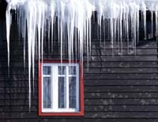

Each winter, most of us break out extra blankets and sweaters to stay warm. In the same way, it's a good idea to outfit your home for winter weather. You can get your windows ready for the cold by taking steps to block drafts, and then add even more insulating power by hanging window treatments such as thermal drapes or window quilts. Take these easy steps now, and you can save energy and lower your heating bills this winter!
WINDOW BASICS
A good place to start winterizing your windows is to investigate whether they need basic repairs or air sealing measures. If you've noticed a draft coming from one or more of your windows, you'll probably want to start by sealing the leaks with caulk, foam, or heat-shrinking plastic ? all available at most hardware stores.
Also remember that some styles of windows are more energy efficient than others. If your home has single-pane windows, you might consider investing in new high performance windows. Although new windows are an expensive purchase, they pay for themselves over time in lower energy bills. If you're ready to buy new windows, try these tips to find the best type for your needs.
WINDOW DRESSING
No matter what style of windows you have, they're often the weak spot in your home's envelope, because the glass doesn't slow the transfer of heat. To provide more insulating power, turn to insulated window coverings.
Commercial products. You can find many brands of shades and drapes that are designed to provide extra insulation for your windows. To compare products, look for window treatments that advertise their R-value? the higher the number the better the insulation they provide. (For context, check out this list of R-values for common building materials.)
Thermal drapes are easy to find online, but their performance can be hard to predict because it depends on how far away the fabric is from the window. In many cases you may want to choose insulated shades, which hang directly over the glass. Online sources for insulated shades include Window Quilts, Symphony Shades and EcoSmart Insulating Shades.
Homemade window quilts. If you like the concept of insulated shades but would prefer to make your own, the process is pretty simple. Usually they're constructed with fabric as the front and back, and good insulating materials as the filler. These designs are also sometimes called window quilts, or movable insulation.
This 1983 article from the Mother Earth News Archive gives several strategies for making window quilts using a variety of insulating materials, including quilted fabric, a polyethylene vapor barrier and bubble wrap. Here's another article with pictures of homemade window quilts, and a good explanation of how they slow heat loss.
MORE DIY OPTIONS
Gary Reysa is an environmentally savvy DIY writer, and on his Web site he suggests a number of intriguing ideas for inexpensive and effective window insulation. Here are a few to consider:
Do you have other ideas for winterizing your windows and saving energy at home? Post your favorite energy saving strategies in our comments section.
|
 Istockphoto/Karel Broz Are your windows ready for winter? |
|
|